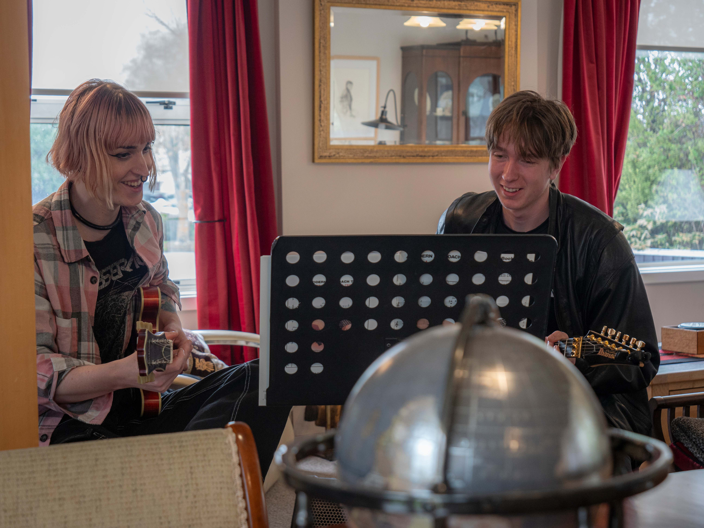
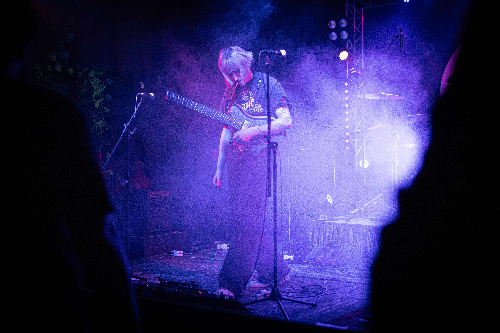

Guitar & Theory Tutoring

Snow offers private guitar tutoring with a focus on a diverse range of genres, including metal, jazz, classical, blues, prog and rock. Whether students are beginners or looking to refine their skills, Snow provides personalized lessons tailored to their interests, covering everything from technique, improvisation, music theory and notation reading.
Snow has been tutoring my daughter Zoe for nearly 2 years now and we couldn’t be happier. Her progress has been rapid with Snow as she is so accomplished in all areas of guitar playing. Zoe continues to be inspired and works hard. Snow is a reliable and dedicated tutor.
Snow Valormae is a fantastic music teacher who has helped me understand guitar modes, tonality, and how to use them smoothly. She has greatly improved my sight-reading skills and taught me to recognize melodies and riffs in different genres, from pop to metal. Her explanations are clear and easy to follow, yet still detailed enough for more experienced players.
Composing and Arranging

Snow composes intricate prog metal instrumentals for her solo project ‘Valormae’ and arranges complex jazz charts, blending technical virtuosity with creative expression. Her work spans dynamic compositions and detailed arrangements, showcasing a deep understanding of both genres. She has recently won an honorary mention award for her song ‘Anxious Atrium’ in the Instrumental section of the Unsigned Only song writing competition.
Rig building (Pedalboards)

Snow’s experience as a rig builder for guitar pedalboards includes expertise in soldering, MIDI programming, and understanding signal paths. Her setups are known for being quiet, power-managed, and seamlessly integrated to ensure reliable performance.
Mixing & Mastering

Snow approaches mixing and mastering with attention to detail and a focus on clarity and balance. She works to bring out the natural character of each track while ensuring the final product is cohesive and polished. Snow’s process is straightforward and thoughtful, always prioritizing the music’s intent without overcomplicating the workflow.
Guitar Setups

Snow Valormae is an experienced guitar tech, specializing in guitar setups with floating bridges and traditional guitars. She is skilled in fret leveling and wiring pickups, ensuring that each instrument is perfectly tailored for peak performance and playability.
I was looking for someone to help set up for drop tuning when I was put onto Snow. She did a great job of setting up my guitar, and it felt even better to play while being well set for accurate tuning for tracking an album worth of material. She had a bunch of really helpful tips, and offered any further adjustments if needed. I strongly recommend Snow if you’re looking for help with your guitar!
Performer

Snow Valormae is a versatile performer, equally skilled in accompanying others and taking the spotlight with solo performances. Her diverse abilities and improvisational skills enable her to adapt comfortably to various musical settings, whether performing alone or with others.